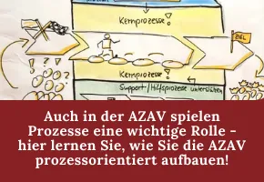

AZAV Online-Akademie - Prozesse in der AZAV
Produktprofil · Marktplatz-Daten 2026-10-09 · Verkaufsseiten-Recherche 2026-10-09 · Kategorien: Leadership & Management
- AZAV Online-Akademie - Prozesse in der AZAV ist ein/e Webinar in Leadership & Management, vertrieben über den Digistore24-Marktplatz von Anbieter UrsulaWienken, gelistet seit 2021-04-15.
- Listenpreis $149.46; Digistore24 meldet — Checkout-Konversion, — Stornierungsquote und 30 % Affiliate-Provision.
- Verdienst pro Verkauf (Affiliate): $44.83 (Anbieter-seitige Statistik, keine Prognose).
Interesse an AZAV Online-Akademie - Prozesse in der AZAV? Aktueller Preis, Boni und Garantiebedingungen finden Sie auf der offiziellen Seite des Anbieters:
Offizielle Verkaufsseite ansehen
Affiliate-Link (Werbung) — wir verdienen ggf. eine Provision, ohne Mehrkosten für Sie.

Marktplatz-Daten
| Produkttyp | Webinar |
|---|---|
| Preis | $149.46 (Single payment) |
| Affiliate-Provision | 30 % |
| Garantie/Rückgabe | Laut Verkaufsseite des Anbieters — vor dem Kauf auf der offiziellen Seite prüfen |
| Anbieter | UrsulaWienken (gelistet seit 2021-04-15) |
| Marktplatz-Statistiken* | Checkout-Konversion — · Stornoquote — · Verdienst/Verkauf $44.83 |
* Anbieter-seitige Statistiken von Digistore24; sie hängen von der Traffic-Qualität ab und sind keine Prognose.
Marktplatz-Beschreibung des Anbieters
Wer die AZAV beherrschen will, der muss ich mit dem Thema Prozessmanagement auseinandersetzen. Das Training leitet die Teilnehmer*innen praxisbezogen und gut nachvollziehbar durch die Welt der AZAV-Prozesse, liefert den notwendigen theoretischen Hintergrund, ohne zu akademisch zu werden und beinhaltet Übungen und viele praxisrelevante Arbeitshilfen und Beispiele.
Von der Verkaufsseite des Anbieters
Seitentitel: AZAV konforme Prozesse definieren
Hauptüberschrift
AZAV konforme Prozesse definieren
159,00
Extras
Abschnitts-Überschriften
- inkl. Mehrwertstteuer
- inkl. Mehrwertstteuer
Einstiegstext
Wir nutzen Cookies auf unserer Website. Einige von ihnen sind essenziell, während andere uns helfen, diese Website zu verbessern.
Essentielle Cookies ermöglichen grundlegende Funktionen und sind für das ordnungsgemäße Funktionieren der Website erforderlich.
Statistik-Cookies sammeln Informationen anonymisiert. Diese Informationen helfen zu verstehen, wie Besucher diese Website nutzen.
Marketing-Cookies werden von Drittanbietern verwendet, um personalisierte Werbung anzuzeigen. Sie tun dies, indem sie Besucher über Websites hinweg verfolgen.
Recherche-Methode: rohes HTML · 380 Wörter · Qualität: medium · recherchiert am 2026-10-09. Vollständige Recherche-Datei (MD) ↗
Ähnliche Angebote in Führung & Management

Ein hochpreisiger Business-Lehrgang für Unternehmer und Geschäftsführer, die ihr Unternehmen betriebssicher weiterentwickeln, operative Abhängigkeiten von ihrer

Das InnenWerk-System ist ein geführter digitaler Entwicklungsweg für Menschen, die spüren, dass ihr bisheriger Weg nicht mehr wirklich passt und die klarer erke

Warum das Coaching Basics Bootcamp? Nicht jeder, der sich für Coaching interessiert, kann oder möchte sofort in eine lange und teure Coaching-Ausbildung investi

Weitere Informationen zum Programm findest du hier. Es handelt sich um eine sehr hochkarätig aufgebaute Weiterbildung, einen Online-Kurs bei freier Zeiteinteilu
Weitere Angebote von UrsulaWienken

Das Online Training AZAV unterstützt alle, die sich für eine Zulassung als AZAV-Träger interessieren oder die Zulassung sinnvoll aufrechterhalten wollen. Die Mo
Wo Sie es sich ansehen können
Aktuelle Preise, Garantie und Boni finden Sie auf der offiziellen Verkaufsseite:
Offizielle Verkaufsseite ansehen
Das ist ein Affiliate-Link (Werbung) — kaufen Sie darüber, verdienen wir ggf. eine Provision, ohne Mehrkosten für Sie.